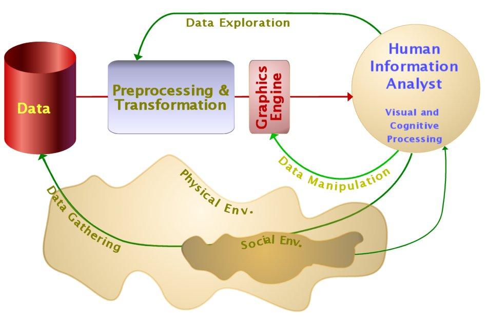
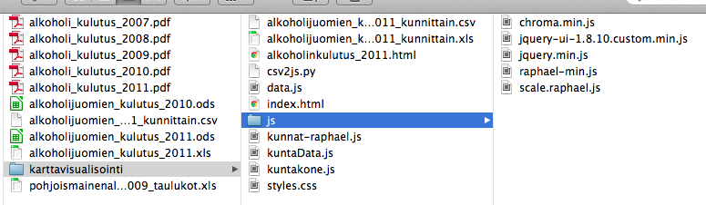

Your browser doesn't support the features required by impress.js, so you are presented with a simplified version of this presentation.
For the best experience please use the latest Chrome, Safari or Firefox browser.
Datajournalismi
Use the arrows keys to navigate back and forth.
Teemo Tebest

Keitä te olette?
- Ketkä ovat <lisää tähän>opiskelijoita?
- Kuinka moni käyttää Twitteriä?
- Kuka on ikinä koodannut?
- Entä kuka on itse tehnyt datajournalismia?
Neljä erilaista
näkökulmaa
- Eri osaajien yhteistyö
- Datajournalistinen prosessi
- Joukkoistamalla uniikkia dataa
- DIY! Hands-on
Mutta ensin...
http://www.condenaststore.com/-sp/But-first-a-distraction-New-Yorker-Cartoon-Prints_i8479863_.htm
http://www.infovis.net/printMag.php?lang=2&num=186

http://www.infovis.net/printMag.php?lang=2&num=186

MOT yritystuet
- Suomalaista yritystukidataa vuosilta 1997 — 2011.
- Laaja aineisto. Yli 200 000 Excel-riviä.
- Mukana toimittaja, koodari, informaatikko.
→ Ohjelman sivu
Yhteistyön voima:
- toimittaja
Toimittaja mietti juttua ja sen journalistista sisältöä sekä näkökulmaa. Mitä hän halusi ohjelmassa käsitellä ja minkälaisista asioista ottaa selvää.
Yhteistyön voima:
- informaatikko
Data kerättiin eri tuen myöntäjiltä. Tekes, TEM, Ely-keskukset, jne. eikä data ollut yhtenäisessä muodossa. Suuri työ yhtenäistämisessä, jossa informaatikosta suuri apu.
Yhteistyön voima:
- koodari
Tehtäväni oli auttaa teknisissä haasteissa sekä toteuttaa verkkoon datajournalistista sisältöä, joka tukisi tv-ohjelmaa. Lisäksi datan julkaiseminen avoimena datana.
Enemmän kuin
osiensa summa
Organisaatiorajat ylittävä yhteistyö on usein haastavaa, mutta samalla opettavaista ja seuraavalla kerralla osaamme toimia huomattavasti ketterämmin.
MOT työryhmä
Mukana tekemässä olivat:
- Kirsi Skön, toimittaja
- Janne Ranta, informaatikko
- Teemo Tebest, datajournalisti
Svenska Yle förevisar:
Alkoholkartan
Svenska Yle:n radio-ohjelma Radar teki keväällä 2012 useampia juttuja alkoholin käytöstä Suomessa.
Toimittaja Eva Koskinen otti minuun yhteyttä ja kysyi jos alkoholinkäyttöä olisi mahdollista visualisoida Suomen kuntakartalla.
Sattumalta samoihin aikoihin THL julkaisi edellisen vuoden alkoholin myyntitilastot.
Alkoholikartta
Hyvää:
- Toi lisäarvoa radio-ohjelmalle.
- Julkaistiin oikea-aikaisesti.
Huonoa:
- Siuntio oli liitetty Lohjaan.
- Alkoholinkulutus vs. -myynti.
Ai niin!
Kun kaksikielisyys otettiin huomioon.
Yksityiskohdat
- Kartta perustui HS:n koodiin.
- Toteutus hyödyntää Raphaël JavaSript-kirjastoa.
- Kartta sisällytettiin <iframe>:llä.
... aika katsoa hieman koodia!
Alkoholikartan
koodit

Data + JS-koodi + HTML
Joukkoistamalla
ainutkertaista dataa
Joukkoistamalla kerätty data on aina uutta ja lokaalia. Me keräsimme dataa PK-seudun lumitilanteesta.
Google:n työkalut
- Käytimme Google Form:a datan keräämiseen.
- Käytimme Google Script:ä paikkatiedon koodaamiseen.
- Käytimme Fusion Tables -työkalua karttavisualisaation toteutukseen.
Eli mitä tehtiin
Ensinnäkin:
Google Form mahdollistaa yksinkertaisesti monipuolistenkin kyselylomakkeiden laatimisen. Vastausdata kerääntyy taulukkomuotoon. Vastaus per rivi.
Hieman koodia
Toiseksi:
Google Script mahdollisti vastausdatan koodaamisen karttapisteiksi. Teknisesti prosessin hankalin osuus, mutta Google:sta löytyi apua.
Lopputulos
- Reaaliaikaisesti täydentyvä kartta.
- Nostettuna Yle:n etusivulla, lisäksi karttaa mainostettiin TV:ssä ja radiossa.
- Suosittu ja ihmiset todella antoivat itsestään paljon vastauksissa.
Kolme asiaa mitkä haluan nostaa.
1) Datajournalismi on journalismin työkalu ja sen tehtävä on palvella sisältöä.
2) Datajournalismia ei voi samalla tavalla kopioida vaan siihen täytyy viitata.
3) Datajournalismi mahdollistaa uutisten personoimisen lukijalle.
Ja lisäksi! Datan käsittely voi viedä jopa 80% datajournalistisesta työpanoksesta.
Jatketaan
Seuraavaksi
Kokeilemme raapia dataa Wikipedia:sta ja tallentaa data taulukkolaskentaohjelmaan. Tämän jälkeen siivoamme datan ja viemme sen Fusion Tables -työkaluun ja visualisoimme sitä eri tavoin.
Kiitos!